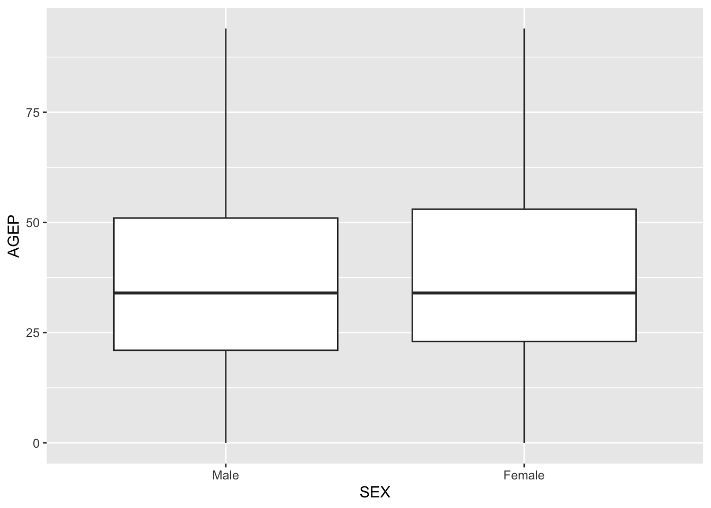

library(tidyverse)
library(httr)
library(jsonlite)
library(janitor)
library(quantreg)
library(roxygen2)ST 558 Project One
Project Overview
Our goal is to write functions that will manipulate and process data sets that come from a census API. We will query the Public Use Microdata Sample (PUMS) Census API, creating a function that allows the user to call the API with different combinations of variables. We’ll then create generic functions to automatically summarize and plot certain returned data, providing numerical and graphical summaries. Lastly, we’ll write up this document via quarto to describe our thought process and give examples of using the functions.
Required Packages
Load required packages for project.
Data Processing
Before creating a function with the API, we first had to validate the integrity of variables. Considering that we have both numerical and categorical variables, we decided to look through each and account for the factors and numerical ranges as appropriate. After validating the variables, we created the API. The API is created so that it prints out the requested categorical, numerical, and time variables with conditions and geographical subset. The user has free rein to choose one or multiple of each type of variable, and if a user would like to select multiple years of data, the multi_api function allows them to do so.
Prepare Time Variables
The time variables need to be handled slightly differently than the other numeric variables. Since there are NA’s, and also since we are working with a range of values, we have decided to find the median (or exact middle) of each time to use for JWAP and JWDP. In particular, JWAP is the time of arrival at work by hour and minute, and JWDP is the time of departure for work by hour and minute. Before we run the API function, we first decided to create a median time table for JWAP and JWDP.
First, create JWAP table:
URL_jwap <- "https://api.census.gov/data/2022/acs/acs1/pums/variables/JWAP.json"
jwap_time_table <- GET(URL_jwap)
jwap_time_table <- fromJSON(rawToChar(jwap_time_table$content))
jwap_time_table <- as_tibble(jwap_time_table$values$item)
jwap_time_table <- pivot_longer(jwap_time_table,
cols = 1:ncol(jwap_time_table),
names_to = "code",
values_to = "range") |>
filter(code != 0) |>
separate_wider_delim(range, delim = " ", names = c("time1", "AMPM1", "to", "time2", "AMPM2"))
jwap_time_table <- jwap_time_table |>
mutate(median_time = if_else(
AMPM1 == "a.m.",
hms::as_hms(
hms::parse_hm(jwap_time_table$time1) +
((hms::parse_hm(jwap_time_table$time2) -
hms::parse_hm(jwap_time_table$time1)) / 2)),
hms::as_hms(hms::parse_hm("12:00") +
hms::parse_hm(jwap_time_table$time1) +
((hms::parse_hm(jwap_time_table$time2) -
hms::parse_hm(jwap_time_table$time1)) / 2)))) |>
mutate(median_time = if_else(median_time > hms::as_hms("12:00:00") &
median_time < hms::as_hms("12:59:59") &
AMPM1 == "a.m.",
median_time - hms::as_hms("12:00:00"),
median_time)) |>
select(code, median_time) |>
arrange(median_time) |>
add_row(code = "0", median_time = hms::as_hms(NA))
jwap_time_table$code <- as.numeric(jwap_time_table$code)
jwap_time_table# A tibble: 286 × 2
code median_time
<dbl> <time>
1 1 02'00"
2 2 07'00"
3 3 12'00"
4 4 17'00"
5 5 22'00"
6 6 27'00"
7 7 34'30"
8 8 42'00"
9 9 47'00"
10 10 54'30"
# ℹ 276 more rowsSecond, create JWDP table:
URL_jwdp <- "https://api.census.gov/data/2022/acs/acs1/pums/variables/JWDP.json"
jwdp_time_table <- GET(URL_jwdp)
jwdp_time_table <- fromJSON(rawToChar(jwdp_time_table$content))
jwdp_time_table <- as_tibble(jwdp_time_table$values$item)
jwdp_time_table <- pivot_longer(jwdp_time_table,
cols = 1:ncol(jwdp_time_table),
names_to = "code",
values_to = "range") |>
filter(code != 0) |>
separate_wider_delim(range, delim = " ", names = c("time1", "AMPM1", "to", "time2", "AMPM2"))
jwdp_time_table <- jwdp_time_table |>
mutate(median_time = if_else(
AMPM1 == "a.m.",
hms::as_hms(
hms::parse_hm(jwdp_time_table$time1) +
((hms::parse_hm(jwdp_time_table$time2) -
hms::parse_hm(jwdp_time_table$time1)) / 2)),
hms::as_hms(hms::parse_hm("12:00") +
hms::parse_hm(jwdp_time_table$time1) +
((hms::parse_hm(jwdp_time_table$time2) -
hms::parse_hm(jwdp_time_table$time1)) / 2)))) |>
mutate(median_time = if_else(median_time > hms::as_hms("12:00:00") &
median_time < hms::as_hms("12:59:59") &
AMPM1 == "a.m.",
median_time - hms::as_hms("12:00:00"),
median_time)) |>
select(code, median_time) |>
arrange(median_time) |>
add_row(code = "0", median_time = hms::as_hms(NA))
jwdp_time_table$code <- as.numeric(jwdp_time_table$code)
jwdp_time_table# A tibble: 151 × 2
code median_time
<dbl> <time>
1 1 00:14:30
2 2 00:44:30
3 3 01:14:30
4 4 01:44:30
5 5 02:14:30
6 6 02:44:30
7 7 03:04:30
8 8 03:14:30
9 9 03:24:30
10 10 03:34:30
# ℹ 141 more rowsNow that this is complete, we can finish Data Processing by creating the API.
Create the API
The API starts by creating blank variables so that a clean slate is run each time. Then, global valid variables of each possible user selection (numerical, categorical, date, and geographical level) are listed for use in the API and later functions. Specific decisions are outlined in documentation and comments within the function.
First, global variables are initialized and valid inputs are established.
#' setup global variables to be returned
#' @noRd
#blank variables for clean slate
census_tib <- as_tibble(data.frame())
num_var <- ""
cat_var <- ""
#all possible variable values
valid_num_var <- c("AGEP", "GASP", "GRPIP", "JWAP", "JWDP", "JWMNP", "PWGTP")
valid_date_var <- c("JWAP", "JWDP")
valid_cat_var <- c("FER", "HHL", "HISPEED", "JWTRNS", "SCH", "SCHL", "SEX")
valid_geo_level <- c("ALL", "REGION", "DIVISION", "STATE")Then, a helper function is created:
get_url <- function(URL_id) {
census_info <- GET(URL_id)
census_df <- fromJSON(rawToChar(census_info$content))
#create a tibble
census_tib <- census_df |>
as_tibble() |>
row_to_names(row_number = 1)
return(census_tib)
}#' Begin query building
#' Numeric variable PWGTP is required for function and always called so is not included as a default that can be overwritten
#' @noRd
api_query <- function(surv_year = "2022", num_var = c("AGEP", "PWGTP"), cat_var = "SEX", geo_level = "ALL", condition = NULL, geo_subset = "STATE:11") {
#ensure user selection is within permissible values
if (surv_year < 2010 || surv_year > 2022 || surv_year == 2020) {
stop("Year must be between 2010 and 2022, excluding 2020.")
}
if (any(!num_var %in% valid_num_var)) {
stop("Invalid Numeric Variable")
}
if (any(!cat_var %in% valid_cat_var)) {
stop("Invalid Categorical Variable")
}
if (any(!geo_level %in% valid_geo_level)) {
print(geo_level)
stop("Invalid Geography Level")
}
#output unique usable strings for the numerical, categorical, and geo level variables
num_var_string <- paste(unique(num_var), collapse = ",")
cat_var_string <- paste(unique(cat_var), collapse = ",")
#if geo level is all, then don't do anything, else then start it as null to be replaced
if (!geo_level == "ALL") {
geo_level_string <- paste(unique(geo_level), collapse = ",")
}
else {
geo_level_string = NULL
}
#start with the URl base, and then append the required numerical, categorical, and geo level with the designated survey years
URL_base <- "https://api.census.gov/data/"
URL_id <- paste0(URL_base, surv_year, "/acs/acs1/pums?get=PWGTP,", num_var_string, ",", cat_var_string, ",",geo_level_string)
#make room for conditions, including subsetting by cat/num and also by region
if (!is.null(condition)) {
condition_string <- paste(condition, collapse = "&")
URL_id <- paste0(URL_id, "&", condition_string)
}
if (!is.null(geo_subset)) {
region_string <- paste(geo_subset, collapse = "&")
URL_id <- paste0(URL_id, "&for=", region_string)
}
#allow user to see their finalized url, then parse it for parameters
print(URL_id)
parsed_url <- parse_url(URL_id)
#pipe to fix spacing and commas, otherwise error
parsed_url$query$get <- parsed_url$query$get |>
strsplit(split = ",") |>
unlist() |>
unique() |>
setdiff(names(parsed_url$query)) |>
paste(collapse = ",")
#clean up url
URL_id <- gsub("%2C", ",", build_url(parsed_url))
#print(URL_id)
#query the api now via a helper function
#GET(URL_id)
census_info <- GET(URL_id)
census_df <- fromJSON(rawToChar(census_info$content))
#create a tibble
census_tib <- census_df |>
as_tibble() |>
row_to_names(row_number = 1)
#append columns to the tibble based on the selected variables from before
for (column in colnames(census_tib)) {
if (column %in% valid_date_var) {
census_tib[[column]] <- as.numeric(census_tib[[column]])
} else if (column %in% valid_num_var) {
census_tib[[column]] <- as.numeric(census_tib[[column]])
} else if (column %in% valid_cat_var) {
census_tib[[column]] <- as.factor(census_tib[[column]])
}
}
#create statements for the time variables that formats them based on the definitions from up above if they are present.
if(str_detect(URL_id,"JWAP")) {
census_tib <- census_tib |>
left_join(
jwap_time_table,
by = c("JWAP" = "code")
) |>
select(-JWAP) |>
rename(JWAP = median_time)
}
if(str_detect(URL_id,"JWDP")) {
census_tib <- census_tib |>
left_join(
jwap_time_table,
by = c("JWDP" = "code")
) |>
select(-JWDP) |>
rename(JWDP = median_time)
}
if(str_detect(URL_id,"SEX")) {
census_tib <- census_tib |>
mutate(SEX = factor(SEX, labels = c("Male", "Female")))
}
if(str_detect(URL_id,"FER")) {
census_tib <- census_tib |>
mutate(FER = factor(FER, labels = c("NA", "Yes", "No")))
}
if(str_detect(URL_id,"HISPEED")) {
census_tib <- census_tib |>
mutate(FER = factor(FER, labels = c("NA", "Yes", "No")))
}
if(str_detect(URL_id,"SCH")) {
census_tib <- census_tib |>
mutate(HHL = factor(HHL, labels = c("NA",
"No",
"Public",
"Private")))
}
if(str_detect(URL_id,"HHL")) {
census_tib <- census_tib |>
mutate(HHL = factor(HHL, labels = c("NA",
"English",
"Spanish",
"Other Indo-European",
"Asian or Pacfic Island",
"Other")))
}
if(str_detect(URL_id,"JWTRNS")) {
census_tib <- census_tib |>
mutate(HHL = factor(HHL, labels = c("NA",
"Car",
"Bus",
"Subway",
"Train",
"Lightrail",
"Ferry",
"Taxi",
"Motorcycle",
"Bicycle",
"Foot",
"Homeworker",
"Other")))
}
if(str_detect(URL_id,"SCHL")) {
census_tib <- census_tib |>
mutate(HHL = factor(HHL, labels = c("NA",
"None completed",
"Preschool",
"Kindergarten",
"First",
"Second",
"Third",
"Fourth",
"Fifth",
"Sixth",
"Seventh",
"Eighth",
"Ninth",
"Tenth",
"Eleventh",
"Twelfth - no diploma",
"High school diploma",
"GED",
"<1yr College",
"1+yrs College - no degree",
"Associate's degree",
"Bachelor's degree",
"Master's degree",
"Professional degree",
"Doctorate degree")))
}
#' Function for creating data assigns a class of census to resulting tibble
#' @noRd
class(census_tib) <- c("census", class(census_tib))
#' Ensure resulting tibble (census_tib) and selected variables are returned to the global environment for use in other functions and analysis
#' Superassigmment operator (<<-) is intentional to ensure local variables are passed to the global environment
#' A list including num_var, cat_var and census_tib is returned for redudancy and convenience so user assign function to an object and then specify the corresponding version of the variable created
#' @noRd
num_var <<- num_var
cat_var <<- cat_var
census_tib <<- census_tib
return(list(
num_var = num_var,
cat_var = cat_var,
census_tib = census_tib
))
}Multi-Year API
This function takes the api_query function and allows the user, along with the previous defaults from that function, to select multiple years and return one large tibble that binds the multiple years by row.
multi_api <- function(surv_years, ...) {
multi_tibs <- lapply(surv_years, function(surv_year) {
tib_call <- api_query(surv_year = surv_year, ...)
final_tib <- tib_call$census_tib
final_tib <- final_tib |>
mutate(surv_year = surv_year)
return(final_tib)
})
entire_tib <- bind_rows(multi_tibs)
return(entire_tib)
}Test the API Function
Ensure the api_query function is working properly by feeding in some numeric, date, and categorical variables.
api_query(2016, num_var = c("GASP", "GRPIP", "JWAP"), "FER")[1] "https://api.census.gov/data/2016/acs/acs1/pums?get=PWGTP,GASP,GRPIP,JWAP,FER,&for=STATE:11"Warning: The `x` argument of `as_tibble.matrix()` must have unique column names if
`.name_repair` is omitted as of tibble 2.0.0.
ℹ Using compatibility `.name_repair`.$num_var
[1] "GASP" "GRPIP" "JWAP"
$cat_var
[1] "FER"
$census_tib
# A tibble: 6,646 × 6
PWGTP GASP GRPIP FER state JWAP
<dbl> <dbl> <dbl> <fct> <chr> <time>
1 230 3 60 No 11 08:17
2 105 30 0 NA 11 24:47
3 119 30 0 No 11 09:17
4 163 80 101 NA 11 NA
5 132 1 0 NA 11 06:22
6 99 0 0 NA 11 NA
7 34 0 0 NA 11 NA
8 123 140 0 NA 11 NA
9 190 140 0 NA 11 09:02
10 28 380 0 NA 11 NA
# ℹ 6,636 more rowsEnsure the multi_api function is working properly by combining years and feeding in some numeric, date, and categorical variables.
multi_api(surv_years = c("2015", "2021"), num_var = c("JWDP","GRPIP","GRPIP"), cat_var = c("FER", "HHL"), condition="AGEP=30", geo_subset= "STATE:19")[1] "https://api.census.gov/data/2015/acs/acs1/pums?get=PWGTP,JWDP,GRPIP,FER,HHL,&AGEP=30&for=STATE:19"
[1] "https://api.census.gov/data/2021/acs/acs1/pums?get=PWGTP,JWDP,GRPIP,FER,HHL,&AGEP=30&for=STATE:19"# A tibble: 723 × 8
PWGTP GRPIP FER HHL AGEP state JWDP surv_year
<dbl> <dbl> <fct> <fct> <dbl> <chr> <time> <chr>
1 113 13 NA Spanish 30 19 02:57 2015
2 26 0 NA English 30 19 03:47 2015
3 12 0 No Other Indo-European 30 19 04:47 2015
4 29 0 NA English 30 19 11:02 2015
5 118 16 NA Spanish 30 19 03:47 2015
6 19 0 No English 30 19 03:17 2015
7 119 0 NA English 30 19 04:02 2015
8 117 0 No English 30 19 08:47 2015
9 258 0 NA English 30 19 06:47 2015
10 120 0 No English 30 19 NA 2015
# ℹ 713 more rowsFinally, test the empty function call (i.e., test the default query) to reflect assigned `state` of 11 (i.e., DC). This is the tibble to be used in creating summaries below.
default_query <- api_query()[1] "https://api.census.gov/data/2022/acs/acs1/pums?get=PWGTP,AGEP,PWGTP,SEX,&for=STATE:11"default_query$num_var
[1] "AGEP" "PWGTP"
$cat_var
[1] "SEX"
$census_tib
# A tibble: 6,718 × 4
PWGTP AGEP SEX state
<dbl> <dbl> <fct> <chr>
1 68 34 Female 11
2 52 33 Female 11
3 44 32 Male 11
4 53 0 Female 11
5 49 23 Female 11
6 35 25 Male 11
7 33 24 Female 11
8 75 58 Male 11
9 81 66 Female 11
10 48 94 Male 11
# ℹ 6,708 more rowsWriting a Generic Function for Summarizing
For the variables returned from the API call (or some subset thereof), generate specific numeric and graphical summaries to describe the data.
Numeric Summary
Write a function that produces means and standard deviations for our numeric variable(s) and counts for our categorical variable(s).
census_summary <- function(tib = census_tib, cat_var_s = c(intersect(colnames(census_tib), valid_cat_var)), num_var_s = c(setdiff(intersect(colnames(census_tib), valid_num_var), "PWGTP"))) {
sample_means <- list()
sample_sds <- list()
all_counts <- list()
for(name in num_var_s) {
if(name %in% colnames(tib) &
name %in% valid_num_var &
!name %in% c("PWGTP", "JWDP", "JWAP")) {
sample_mean <- sum(tib[[name]] * tib$PWGTP)/sum(tib$PWGTP)
sample_sd <- sqrt(sum((tib[[name]]^2)*tib$PWGTP)/sum(tib$PWGTP)-sample_mean^2)
sample_means[[name]] <- sample_mean
sample_sds[[name]] <- sample_sd
}
else if(name %in% c("JWAP", "JWDP")) {
tib <- na.omit(tib)
sample_mean <- (sum(as.numeric(tib[[name]]) * tib$PWGTP)/sum(tib$PWGTP))
sample_sd <- (sqrt(sum((as.numeric(tib[[name]])^2)*tib$PWGTP)/sum(tib$PWGTP)-sample_mean^2))
sample_mean <- hms::round_hms(hms::as_hms(sample_mean), secs = 1)
sample_sd <- hms::round_hms(hms::as_hms(sample_sd), secs = 1)
sample_means[[name]] <- sample_mean
sample_sds[[name]] <- sample_sd
}
else {
stop("Please enter numeric variables used in API call except PWGTP")
}
}
for(name in cat_var_s) {
if(name %in% colnames(tib) & name %in% valid_cat_var) {
counts <- tib |>
group_by(tib[[name]]) |>
summarise(count = n()) |>
rename_with(~ name, 1)
all_counts[[name]] <- counts
} else {
stop("Please enter categorical variables used in API call")
}
}
#return as a named list
return(list(sample_means = sample_means, sample_sds = sample_sds, all_counts = all_counts))
}Test out this function by running census_summary on SEX and AGEP variables per the default api_query.
cen_sum <- census_summary(cat_var_s = "SEX", num_var_s = "AGEP")
print(cen_sum)$sample_means
$sample_means$AGEP
[1] 37.05794
$sample_sds
$sample_sds$AGEP
[1] 21.39444
$all_counts
$all_counts$SEX
# A tibble: 2 × 2
SEX count
<fct> <int>
1 Male 3135
2 Female 3583Validate that the call above returns the same output as an empty function call.
default_cen_sum <- census_summary()
print(default_cen_sum)$sample_means
$sample_means$AGEP
[1] 37.05794
$sample_sds
$sample_sds$AGEP
[1] 21.39444
$all_counts
$all_counts$SEX
# A tibble: 2 × 2
SEX count
<fct> <int>
1 Male 3135
2 Female 3583Graphical Summary
Create a generic plot() function for a census class tibble. Require the user to specify one categorical variable and one numeric variable for plotting purposes.
census_plot <- function(tib = census_tib, cat_var_s, num_var_s) {
for(name in num_var_s) {
if(name %in% colnames(tib) &
name %in% valid_num_var &
name != "PWGTP") {
y <- tib[[name]]
} else {
stop("Please enter numeric variables used in API call")
}
}
for(name in cat_var_s) {
if(name %in% colnames(tib) &
name %in% valid_cat_var) {
x <- tib[[name]]
} else {
stop("Please enter categorical variables used in API call")
}
}
ggplot(tib,
aes(x = x, y = y, weight = PWGTP)) +
geom_boxplot() +
xlab(cat_var_s) +
ylab(num_var_s)
}Test the `census_plot` function on SEX and AGEP variables per the default api_query.
census_plot(cat_var_s = "SEX", num_var_s = "AGEP")